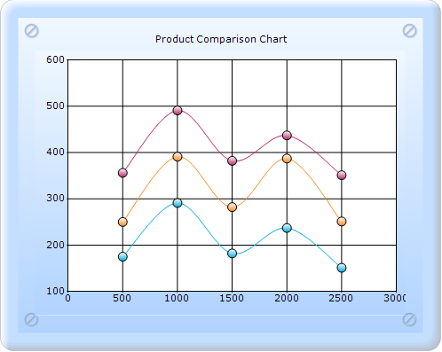
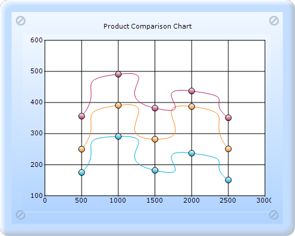

ScatterSplineTension sets the tension required for the Scatter Spline chart.
|
Details | |
|
Possible values |
Any possible numeric value. |
|
Default value |
0.5 |
|
2D/3D limitations |
No |
|
Application to chart element |
All series |
|
Application to chart types |
Scatter Spline chart |

Figure 209: Scatter Spline chart with default Spline Tension

Figure 210: Scatter chart with Spline Tension 2
See also